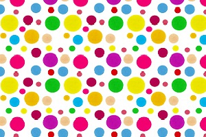

Spots Game Play
This is a great shuffleboard game for a single player to play,
as it does not require an opponent. The player playing tries
to shoot their highest score, and is a test of both lagging
ability, as well as sticking
There is very minimal strategy in this game, but it is great
for players learning how to knock off weights at particular
locations on the board.
Players shoot eight frames down and back, so four are shot
from each end. For each frame, another person sets up three
weights on the board for the player to try to knock them off
and then lag the rest of their weights.
The weights are set up in varying areas across the board,
which is great for players who want to work on their skill
and need practice in knocking off certain weights from various areas.
Additionally, since this game is played by just one person,
it is a great way to practice without the incredible stress
that some players feel when they are in competition with
other players and can easily help players improve their
game to play on a team.